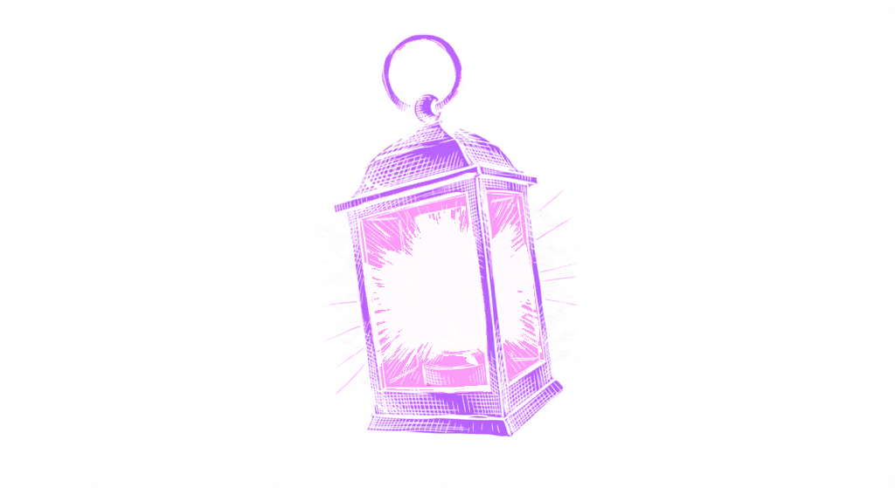

Familiar
Your own music, on your own server, in real apps. Familiar listens to every track you own and builds playlists from how the music actually sounds.
v0.2.0-beta17 · 2026-10-04A Mac with Apple Silicon, or any machine with Docker · MIT licensed
Install Familiar See what it does
Mac, Synology, OpenMediaVault, Linux, or Windows with Docker
What it does
Make a playlist from anything
Right-click a track, an album, an artist — or a handful you have picked out — and Familiar builds a playlist around it, scored from how the music actually sounds. No prompt to write, no model to pay for, no API key anywhere.

Real apps for the Mac and the phone
Background audio, lock-screen controls, offline downloads, CarPlay, radio that keeps going when the album ends. Your library by album and artist, and a map of it laid out by how things sound.

Or ask for it in words
Familiar speaks MCP. Point Claude Desktop, or any MCP host, at your library and it gets 36 tools for search, playback, metadata and playlists — searching the audio itself, not the tags.
“Something chill for late-night coding”energy < 0.4 · valence 0.3–0.6
“Beatmatch-safe house set”tempo_cv_max = 0.05
Familiar holds no API key and calls no model. Whatever you connect is your account and your choice.
It looks after the library
Familiar scans your files, works out which artists and albums are really the same one, fetches the artwork, and analyses every track. Fixes you make stick — a re-scan will not undo them. Your files are never moved or rewritten.

Also included
- Discover — new releases from artists already in your library
- Smart playlists — rules over tags, audio features and listening history
- Find similar — surface sonically close tracks from any song
- Musical features — BPM, key, energy, danceability, acousticness
- Community cache — opt-in, skips hours of analysis on a new library
- Web app for setup — scanning, analysis, backup, Last.fm, diagnostics
How Familiar compares
| Familiar | Jellyfin | Plex | Apple Music | Spotify | |
|---|---|---|---|---|---|
| Plays your existing MP3 / FLAC files | Yes | Yes | Yes | iCloud Match (may replace with catalog version) | Local Files — MP3 only, same Wi-Fi |
| MCP server (bring your own AI) | Yes | — | — | — | — |
| Search by describing the sound | Yes (CLAP) | — | — | — | — |
| Audio feature analysis | BPM, key, energy, mood | Basic | Sonic analysis (Plex Pass) | Catalog-only | Catalog-only |
| Community analysis cache | Yes | — | — | — | — |
| Self-hosted / no cloud | Yes | Yes | Partial | — | — |
| Smart playlists | Rules-based | Community plugin | Yes | Yes | — |
Competitor capabilities checked against each product's own documentation on 2026-08-16. They change; if something here is out of date, tell us.
Install

Where will your server run?
Each is below, in step 2: a Mac, Synology, OpenMediaVault, Linux and other NAS, and Windows with Docker.
Install it
Mac
No Docker and no terminal. Familiar Server is an app that lives in the menu bar. Apple Silicon, macOS 14 or later.
- From the releases page, under the newest release's Assets, download
Familiar-Server-….dmg. - Open it, drag Familiar Server to Applications, and open it from there.
- Click its icon in the menu bar — a house with a music note — and choose Choose Music Folder…. A network share is fine; macOS asks once whether it may read it.
- When the menu says it is running, choose Open Admin. Your browser opens Familiar, already signed in.
Familiar Server — updates, analysis on battery, and where its data lives.
Synology
No terminal at all. Everything happens in DSM, in Container Manager.
- Open Package Center and install Container Manager (DSM 7.2 or newer; on older DSM it is called Docker).
- In File Station, make a folder for Familiar's data:
/volume1/docker/familiar. Your music can stay wherever it already lives, for example/volume1/music. - In Container Manager, go to Project → Create. Name it
familiar, set the path to/volume1/docker/familiar, and choose Create docker-compose.yml. Paste the file from the guide below, changing/volume1/musicto your own music folder. - Click Build and wait until every container shows Running.
- Sign in: in Container → familiar-api → Log, find the line with
#token=and open that link, with your NAS's address in place of the placeholder.
Synology guide — the compose file to paste, and the list of models this runs on.
OpenMediaVault
No terminal. OMV has a Compose page, and Familiar is one file pasted into it.
- In omv-extras, install the openmediavault-compose plugin, then go to Services → Compose → Settings and enable it. OMV 6 or 7.
- Make a shared folder called
familiaron your data disk, for the database and settings. Your music stays where it already is. - Go to Services → Compose → Files → Add, name it
familiar, and paste the file from the guide below — replacing the/path/toplaceholders with your own folders. - Press Up. The first run downloads about 7 GB.
- Sign in: in the
familiar-apicontainer's log, find the line with#token=and open that link, with your NAS's address in place of the placeholder.
If Familiar finds no music, it is almost always the shared folder's permissions rather than the path: the container has to be able to read it. The guide below shows the one command that tells you which.
OpenMediaVault guide — the compose file to paste, the HTTPS proxy, and the permissions check.
Linux & NAS
Two files and three commands. Also the path for Unraid, QNAP and anything else with a shell and Docker 24+.
- Download the two files Docker needs:
mkdir familiar && cd familiar curl -LO https://raw.githubusercontent.com/seethroughlab/familiar/main/docker/docker-compose.prod.yml curl -LO https://raw.githubusercontent.com/seethroughlab/familiar/main/docker/init-pgvector.sql - Start it, pointing
MUSIC_LIBRARY_PATHat your music:MUSIC_LIBRARY_PATH=/srv/music docker compose -f docker-compose.prod.yml up -dPulls the multi-arch image from
ghcr.io/seethroughlab/familiar:latest. Nothing is built locally. - Sign in with the link it printed:
docker logs familiar-api 2>&1 | grep '#token='
Installation guide — settings, upgrading and troubleshooting.
Windows (Docker)
Docker Desktop, and PowerShell for three commands. Familiar Server for Windows, with no Docker, is coming.
- Install Docker Desktop, keeping the WSL 2 option it offers, and open it once.
- Open PowerShell and download three small files:
mkdir familiar; cd familiar curl.exe -LO https://raw.githubusercontent.com/seethroughlab/familiar/main/docker/docker-compose.prod.yml curl.exe -LO https://raw.githubusercontent.com/seethroughlab/familiar/main/docker/docker-compose.desktop.yml curl.exe -LO https://raw.githubusercontent.com/seethroughlab/familiar/main/docker/init-pgvector.sqlcurl.exewith the extension, because PowerShell uses plaincurlfor something else. - Start it, with your own music folder in place of the one below:
$env:MUSIC_LIBRARY_PATH="C:\Users\you\Music" docker compose -f docker-compose.prod.yml -f docker-compose.desktop.yml up -dThe first run downloads about 7 GB.
- Sign in with the link it printed:
docker logs familiar-api 2>&1 | Select-String '#token='
Installation guide — settings, upgrading and troubleshooting.
On a NAS or PC with 8 GB of memory or less, add DISABLE_CLAP_EMBEDDINGS=true: the model that listens to your music peaks at about 4 GB on its own. You keep the library, tags, BPM, key, energy, mood and smart playlists, and lose what compares how tracks sound, including Find Similar. It can be turned on later.
Where do you want to listen?
Mac

The Mac player needs macOS 14.4 or later.
If your server is Familiar Server on this Mac, choose Open in Familiar from its menu, and the player connects to it.
The long form
- Familiar ServerThe Mac app: updates, battery, where its data lives
- Installation GuideDocker on a NAS, Linux or Windows: settings, upgrading, troubleshooting
- macOS with DockerFor a Mac that runs Docker instead of Familiar Server
Listening away from home
At home, your apps reach the server over your own network. Listening from a train is a different question, and worth understanding before you set it up.
Use Tailscale
Tailscale puts your server and your phone on a small private network of your own. Nothing is exposed to the internet, there is no router setting to change, it works on cellular, and the connection is encrypted, so the sign-in stays private. Install it on the server and on each device you listen with, turn on HTTPS certificates in the admin console, then run one command on the server:
tailscale serve --bg https / http://localhost:4400The server is then at https://<server>.<tailnet>.ts.net, with a certificate that renews itself. This is the setup Familiar is developed against.
If you would rather not
Cloudflare Tunnel and WireGuard both work, and are covered in the FAQ. One warning worth reading twice: a reverse proxy does not make Familiar safe to publish. With HTTPS it keeps the sign-in private on the way, but the music needs no sign-in. A proxy that adds a login of its own covers everything — and the apps and speakers cannot answer it.
Get started
One server, on the music you already own.